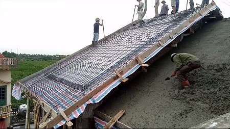

pitched-roof-slab

The reinforced concrete pitched roofs are sloping slabs mostly preferred in high rainfall regions. The most common shape of
a pitched roof is the triangular shape. Proper designing must be made beforehand to ensure the smooth construction of the
pitched roofs.
Pitched roof slab construction
Precautions:
i) The mix design of concrete should not be tampered.ii) Proper formworks with sufficient support should be provided.
iii) The concrete has to be placed from bottom to top.
iv) The tiles, if placed on the slab shall be custom made to reduce wastage.
v) If tiles are not placed, weather protection coats should be used.
Advantages Of Pitched Roof Slab:
i) Gives a pleasant look.ii) Increased thermal performance.
iii) Saves materials due to less depth of the slab.
iv) Increased service area inside the building.
v) Increased height improves the natural ventilation and lighting.
Disadvantages Of Pitched Roof Slab:
i) Skilled labours are required.
ii) The formwork shuttering is tedious.
iii) The vertical expansion of the building is not possible.
v) The construction time is more.